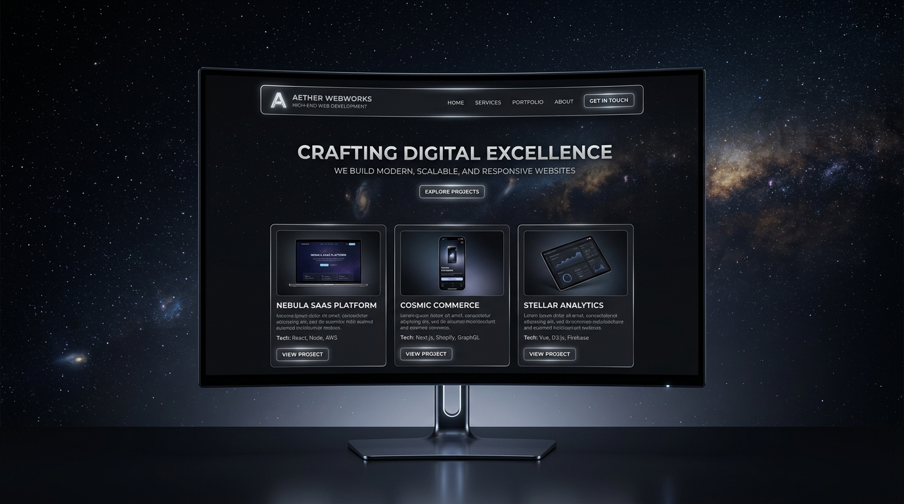
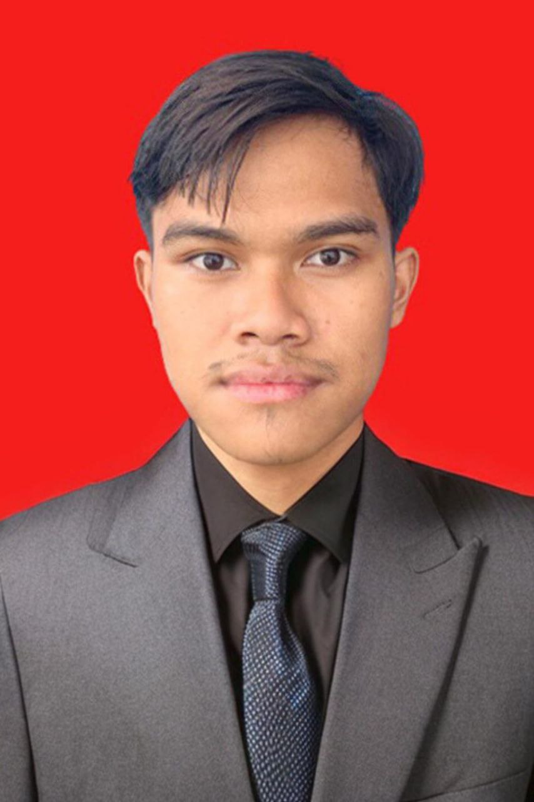
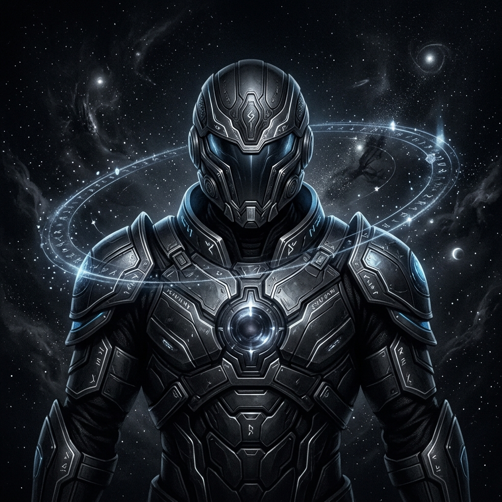
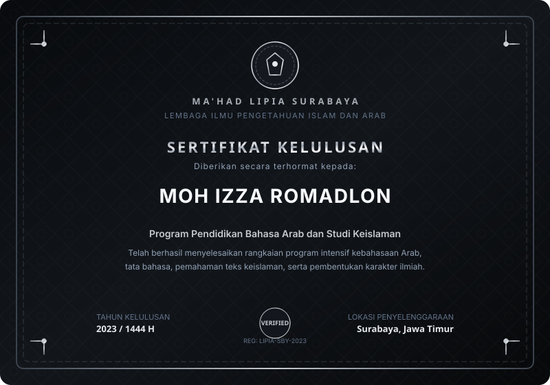
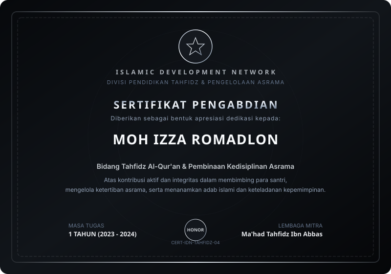
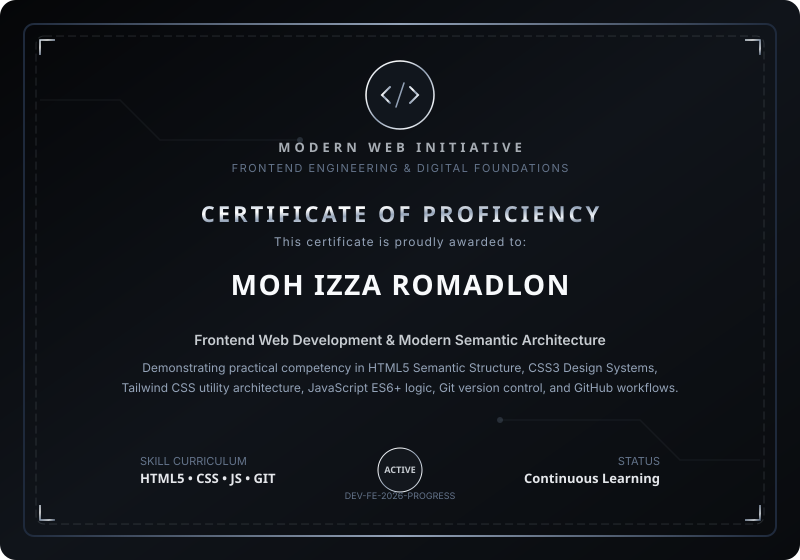
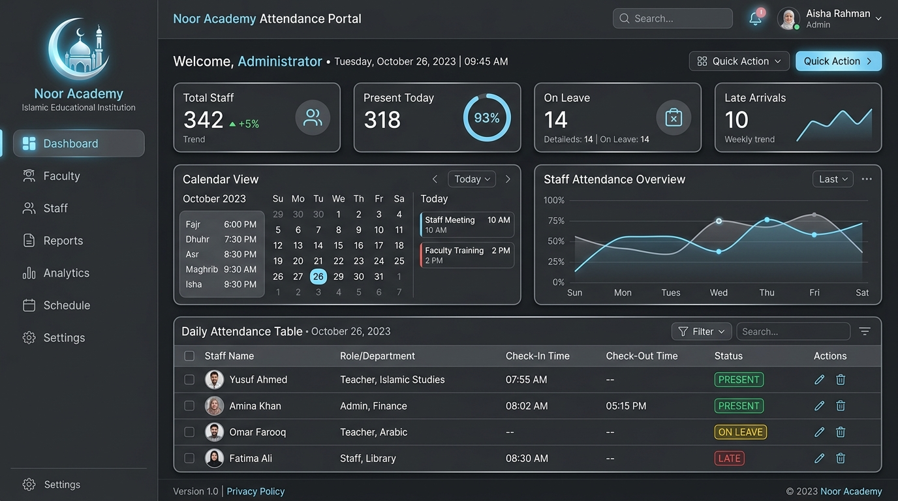
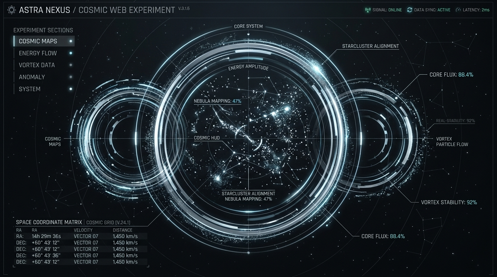

PROJECT 01

Management Education Student × Web Development Enthusiast
Saya adalah mahasiswa Manajemen Pendidikan Islam yang terus mengembangkan diri dalam bidang pendidikan, teknologi, dan web development. Berkomitmen menjembatani kepemimpinan edukatif dengan inovasi digital modern.


Building Knowledge. Developing Skills. Creating Value.
Saya adalah Moh Izza Romadlon, mahasiswa semester 5 Program Studi Manajemen Pendidikan Islam di UIN Syekh Wasil Kediri.
Saya memiliki ketertarikan mendalam pada manajemen pendidikan, kepemimpinan Islam, pengembangan karakter santri, dan transformasi digital. Bagi saya, perkuliahan bukan sekadar pencapaian akademis formal, melainkan laboratorium pembentukan pemikiran analitis, etika, dan kesiapan berkontribusi.
Saat ini saya sedang memperdalam HTML, CSS, Tailwind CSS, JavaScript, Git, dan GitHub. Saya percaya bahwa kemampuan mengintegrasikan sistem tata kelola pendidikan dengan teknologi web interaktif adalah kunci kemajuan institusi pendidikan di era modern.
"Menyatukan nilai adab islamiyah dengan ketelitian kode pemrograman digital."
Every stage builds the next version of me.
Program Studi Manajemen Pendidikan Islam (MPI) • Mahasiswa Semester 5
Menempuh pendidikan sarjana dengan fokus pada kepemimpinan pendidikan, tata kelola lembaga Islam, perencanaan strategis pendidikan, serta pengembangan kurikulum dan kebijakan mutu.
Pendidikan Bahasa Arab dan Studi Keislaman
Mendalami kaidah tata bahasa Arab formal (Nahwu, Sharaf), kefasihan literatur klasik, pemahaman teks syar'i, dan wawasan metodologi studi keislaman.
Sragen, Jawa Tengah
Menempuh pendidikan tingkat atas berbasis asrama pesantren dengan penekanan pada pendalaman adab, tahfidz Al-Qur'an, kedisiplinan hidup mandiri, dan kepemimpinan santri.
Sragen, Jawa Tengah
Membangun pondasi keilmuan agama, hafalan Al-Qur'an, pembiasaan bahasa Arab harian, dan pembentukan integritas karakter di lingkungan santri.
Kediri, Jawa Timur
Mengawali fondasi belajar formal dan pembentukan kepribadian religius sejak usia dini di kota kelahiran Kediri.
Keahlian praktis yang sedang aktif dipelajari, dieksplorasi, dan dikembangkan.
Semantic markup, web accessibility standard, clean structure, metadata, and modern forms.
Flexbox, Grid layouting, keyframe animations, CSS custom properties, and responsive media queries.
Utility-first design system, responsive breakpoints, dark mode theming, and custom configuration.
DOM manipulation, event handling, arrow functions, async logic, and interactive components.
Version control fundamentals, committing history, branch management, and repository hygiene.
Remote repositories, collaborative workflows, GitHub Pages deployment, and release tagging.
Mobile-first paradigm, flexible grid systems, responsive typography, and cross-device testing.
Visual hierarchy, color harmony, dark mode contrast, wireframing, and component aesthetics.
Dokumentasi pencapaian dalam bidang studi keislaman, pengabdian, dan pembelajaran mandiri teknologi.

2023Program intensif kebahasaan Arab, pemahaman teks keagamaan, dan pembinaan karakter intelektual.

2024Dedikasi satu tahun pembinaan tahfidz Al-Qur'an, kedisiplinan santri, dan tata kelola asrama.

2026Kompetensi terapan HTML5, CSS modern, Tailwind CSS, JavaScript ES6+, dan manajemen Git.
Implementasi nyata dan eksperimen digital dalam pengembangan web modern.


Dashboard presensi dan pelaporan jadwal guru/ustadz berbasis web untuk meningkatkan akurasi kehadiran di lembaga pendidikan dan tahfidz.

Eksperimen antarmuka HUD futuristik, manipulasi partikel canvas, transisi mikro, dan desain interaktif berkecepatan tinggi.
Perjalanan pertumbuhan berkesinambungan: dari pondasi karakter hingga penguasaan teknologi.
Pengalaman pengabdian dalam lingkungan pendidikan dan tahfidz Al-Qur'an. Membantu aktivitas santri harian, membangun integritas adab, dan memupuk rasa tanggung jawab dalam membina generasi muda.
Bertanggung jawab di bidang Tahfidz dan pengelolaan kedisiplinan Asrama. Melatih kepekaan manajemen organisasi praktis, penyelesaian konflik antar santri, serta koordinasi program pembinaan karakter.
Menempuh studi Manajemen Pendidikan Islam (MPI) hingga semester 5. Memperdalam teori kepemimpinan kelembagaan, metodologi riset ilmiah, tata kelola mutu sekolah Islam, dan dinamika keorganisasian mahasiswa.
Mengeksplorasi dan mempraktikkan HTML, CSS, Tailwind CSS, JavaScript ES6+, Git, dan GitHub secara konsisten. Membangun portofolio dan proyek aplikasi edukasi untuk mengasah keterampilan coding mandiri.
"Progress is built step by step."
"Belajar bukan tentang seberapa cepat kita sampai, tetapi seberapa konsisten kita berkembang."
Jika ingin berdiskusi, berkolaborasi, atau memiliki project yang ingin dikembangkan bersama, silakan hubungi saya. Terbuka untuk diskusi manajemen pendidikan maupun kolaborasi web development.
Tuliskan pesan Anda di bawah, formulir ini akan secara otomatis membuka obrolan terformat ke WhatsApp Moh Izza.
Deskripsi sertifikat...